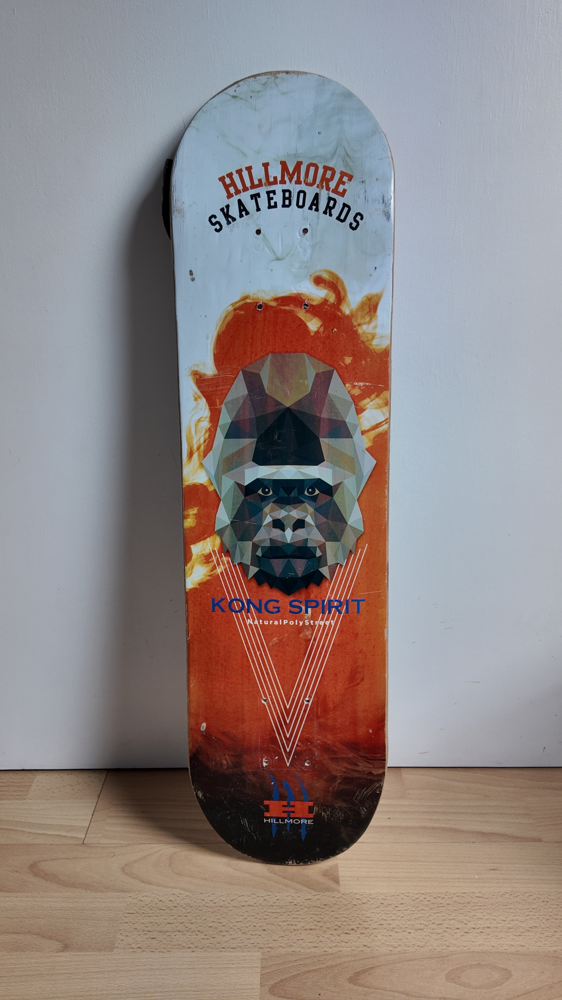
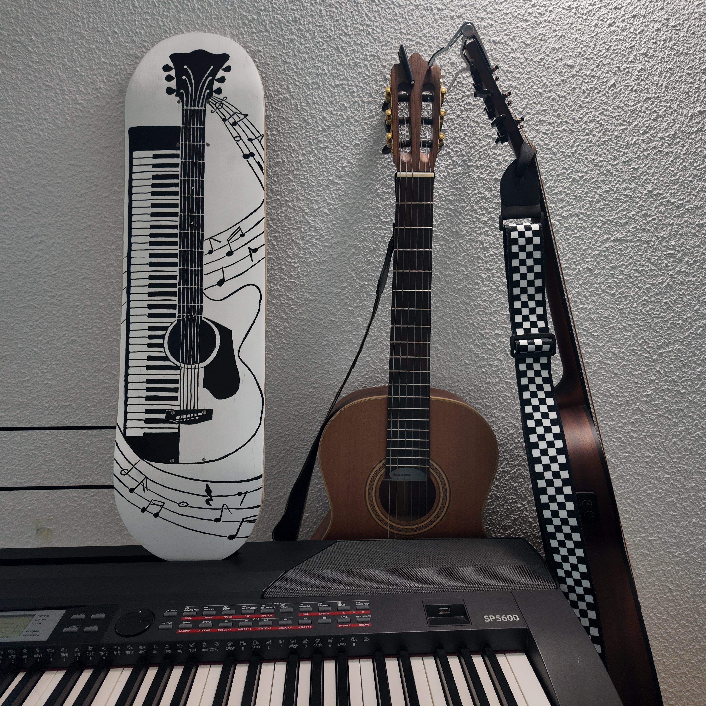
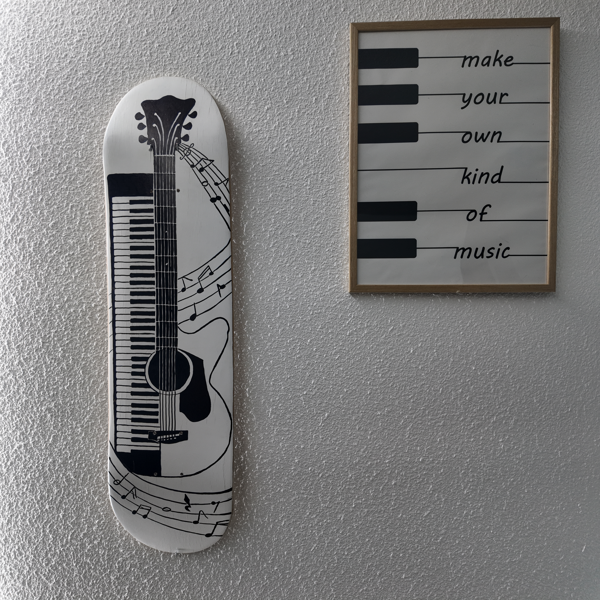

Polyphonie
Deux instruments, une même passion..
Source d’inspiration
La musique occupe une place très importante dans mon quotidien. Même lorsque je n’en joue pas, elle m’accompagne en permanence. Plus jeune, j’ai pratiqué la guitare pendant plusieurs années. Plus récemment, je me suis mis au piano, un instrument que j’ai toujours voulu apprendre. Ces deux instruments sont devenus, avec le temps, mes véritables instruments de cœur.
Avant / Après

J’avais envie, dans mon appartement, d’avoir une planche qui me rappelle cet amour pour la musique.
Une présence visuelle, silencieuse, mais chargée de sens.
Cette planche est née de cette envie : créer un lien entre mes deux instruments, les faire coexister sur un même support, sans hiérarchie.
La guitare et le piano se superposent et se complètent.

Le noir et le blanc ont été choisis volontairement pour faire écho aux touches d’un piano.
Un contraste simple, presque évident, qui renforce l’idée de dualité et d’équilibre.
Les formes des instruments se mêlent, comme s’ils ne formaient plus qu’un seul objet.
Le dessin est issu d’un croquis réalisé à la main, puis peint directement sur la planche.

Cette planche est purement décorative.
Elle n’a pas vocation à être ridée, mais à être regardée, à évoquer une émotion, un souvenir, une passion.
Elle représente mon rapport à la musique : parfois pratiquée, souvent écoutée, mais toujours essentielle.